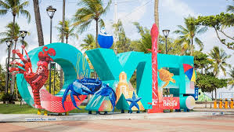

O luxuoso bairro de Boa Viagem é conhecido pela praia extensa de mesmo nome que conta com o ambiente animado do Shopping Recife e um calçadão. A praia rasa de águas mornas e protegida por recifes atrai muitas famílias. As opções de refeições incluem lanches de rua, como crepes de tapioca doces ou salgados, buffets por quilo e restaurantes de frutos do mar com vista para o mar. Os bares e as casas noturnas são movimentados à noite, e a praia fica toda iluminada.
